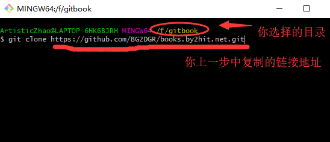

接入books.by2hit.net的开源创作平台
作者：BG2DGR
简介
books.by2hit.net是哈尔滨工业大学业余无线电俱乐部一个为会员开放的创作平台,用以创作更多的原创内容.
注意事项
- 项目托管在Github平台,一切开源
- 内容包括但不限于:业余无线电相关内容,电子电路,互联网技术等
- 内容由俱乐部管理层人员审核
- 遵循GNU General Public License v3.0
如何接入
准备工作
准备写作环境
访问BY2HIT/books.by2hit.net开源项目并Fork
项目地址:https://github.com/BY2HIT/books.by2hit.net
 点击fork之后,页面会自动跳转到你的GitHub页面,同时你的repo中就会出现刚刚fork的这个项目.注意:此时你fork的操作只是对源项目的当前时刻的状态进行复制,到你的repo之后,如果源项目更新,但是你的repo中的项目是不会更新的.解决办法请看TODO
点击fork之后,页面会自动跳转到你的GitHub页面,同时你的repo中就会出现刚刚fork的这个项目.注意:此时你fork的操作只是对源项目的当前时刻的状态进行复制,到你的repo之后,如果源项目更新,但是你的repo中的项目是不会更新的.解决办法请看TODO获取你的repo地址

在合适的位置打开git-bash,并clone repo 到本地

开始创作
目录结构
├── book.json
├── CNAME
├── git_book_use
│ ├── gitbook_fork_sync(这是目录)
│ ├── gitbook_fork_sync.md
│ ├── gitbook_index.md
│ ├── gitbook_use(这是目录)
│ └── gitbook_use.md
├── information
├── LICENSE
├── linux
├── radio
├── README.md
└── SUMMARY.md
文件略多,这里仅列出顶级目录,以及git_book_use目录中文件和目录.
- 目录文件--SUMMARY.md
首先SUMMARY.md 是这个平台文章的总目录,如果你添加了一篇文章青注意在此添加你文章的链接地址,否则默认不会访问到你的文章. - 内容分类目录 "git_book_use", "information", "linux", "radio"四个文件夹是分类目录, 不同分类的文章被保存在不同的文件夹下面
| 目录名 | 内容 |
|---|---|
| radio | 业余无线电相关内容与知识 |
| information | 信息学相关的内容,如数据压缩,加密等内容 |
| linux | linux操作系统的相关内容,包括一些开源社区 |
| git_book_use | 介绍代码管理平台git,以及本开源知识库的用法和注意事项等 |
| ... | 更多内容等待你来添加 |
- 文章文件
上文目录中列举出的gitbook_fork_sync.md,就是一片文章文件,他用markdown语法编写而成.详细请点击链接. - 图片目录
文章中全是文字是单调的,就如这篇文章,就使用了大量图片, 请把图片放入中,引用方式之后会介绍. - 子目录文件 index.md
在每个分类目录中,都包含一个\index.md (其中*号内容同目录名),注意在此添加你文章的链接地址
建立你的第一篇文章
选择一个目录,或者新建一个目录.
并开始用markdown写了一篇文章.
另:如何添加图片
请在图片文件夹中首先存入你的图片,然后在你的文章中写入类似

注意格式,小括号中,应该是"目录名/文件名"
提交你的文章
再提交之前,先要确认目录是否添加好.
添加到暂存区
在你刚刚的git-bash窗口中输入git add .请注意上图中画红线的地方
提交版本
再输入git commit -m "教你接入开源资料库(部分)"上面 -m 后面,引号当中的是一个提示信息,用来提示你自己,这个提交的内容大概是什么.
推送到远程
git push输入账户和密码 注意:这个用户名就是你GitHub的用户名
向上游库发出提交申请 这是你的提交是上传到你自己的GitHub中的repo当中的,但是我们的平台是托管到BY2HIT的GitHub平台当中的.这时就需要在你自己的repo页面进行点击new pull request 按钮.进行提交自己的项目.
如果在你fork之后,如果源repo更新了内容之后,就会出现下图的情况: 这是就需要进行消除冲突 关于消灭冲突和保持和源repo同步的话,请参照这篇文章github使用指南——在你pull request之前（如何同步你fork的库）
详细的看完上一篇文章的话,则你的文章就已经进入管理员审核的列表了.
虽然感觉这个平台你可能觉得麻烦,但是你会渐渐爱上这个平台.习惯开源社区!